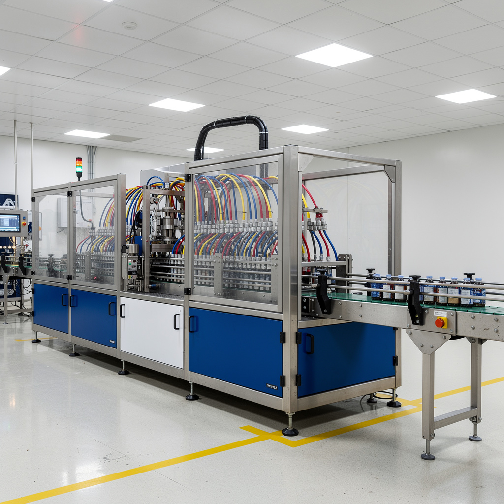
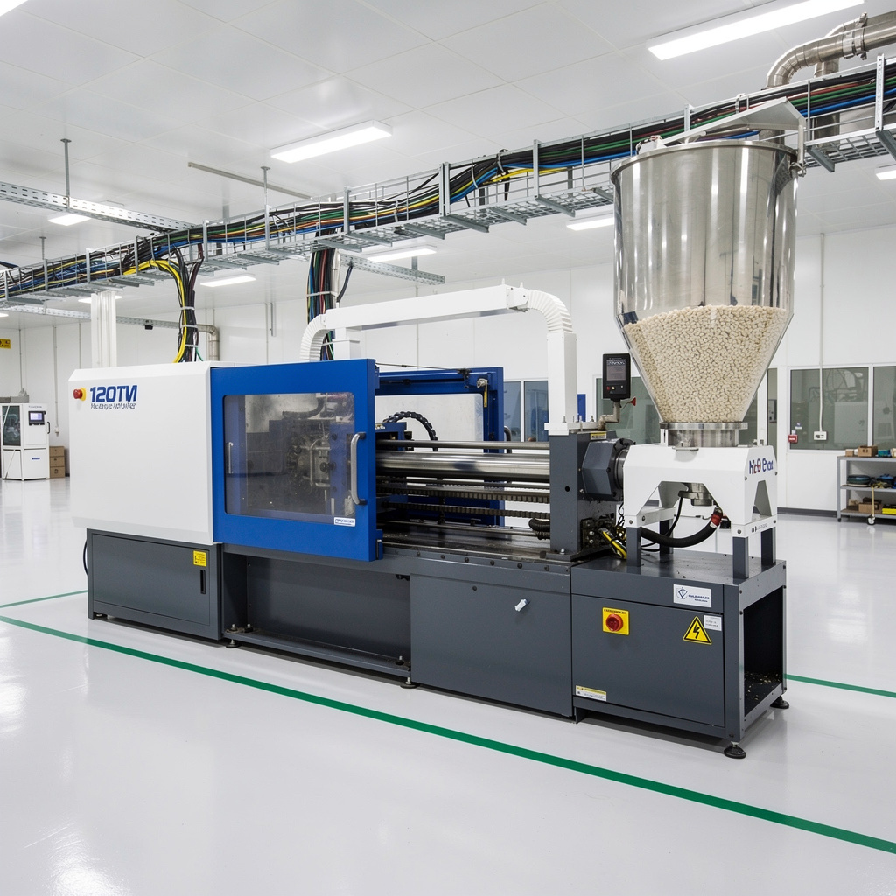
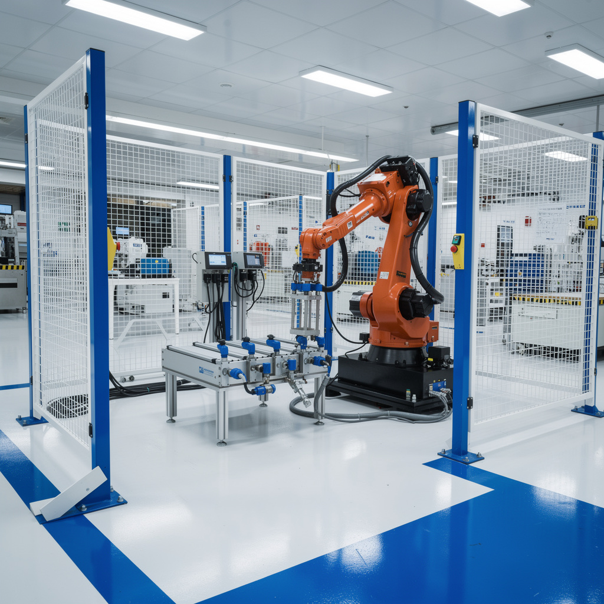
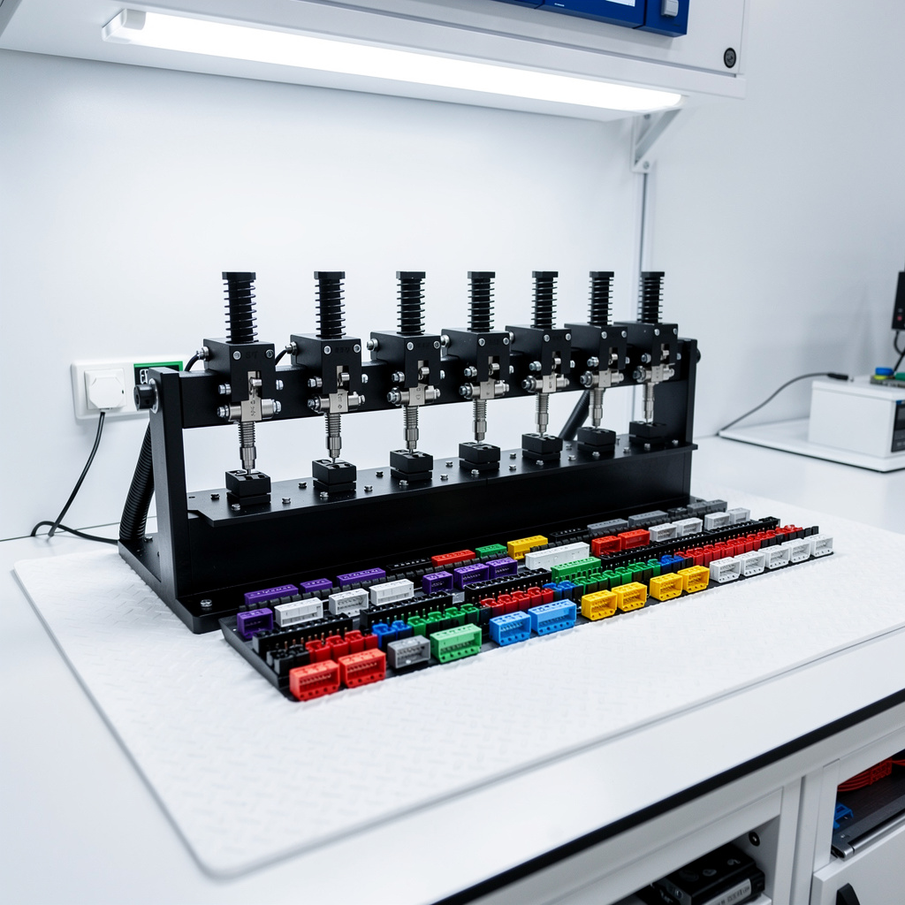
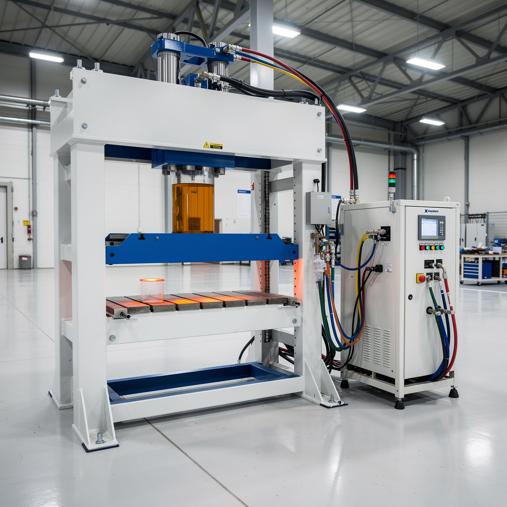
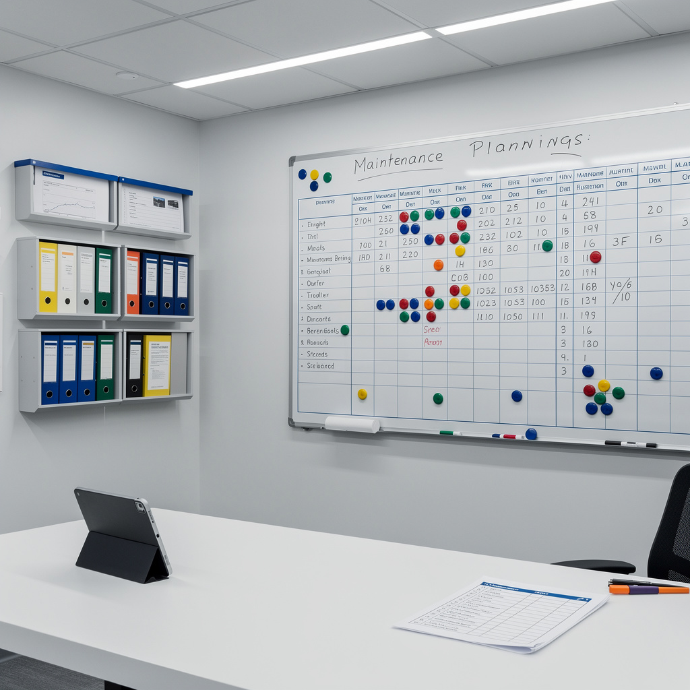
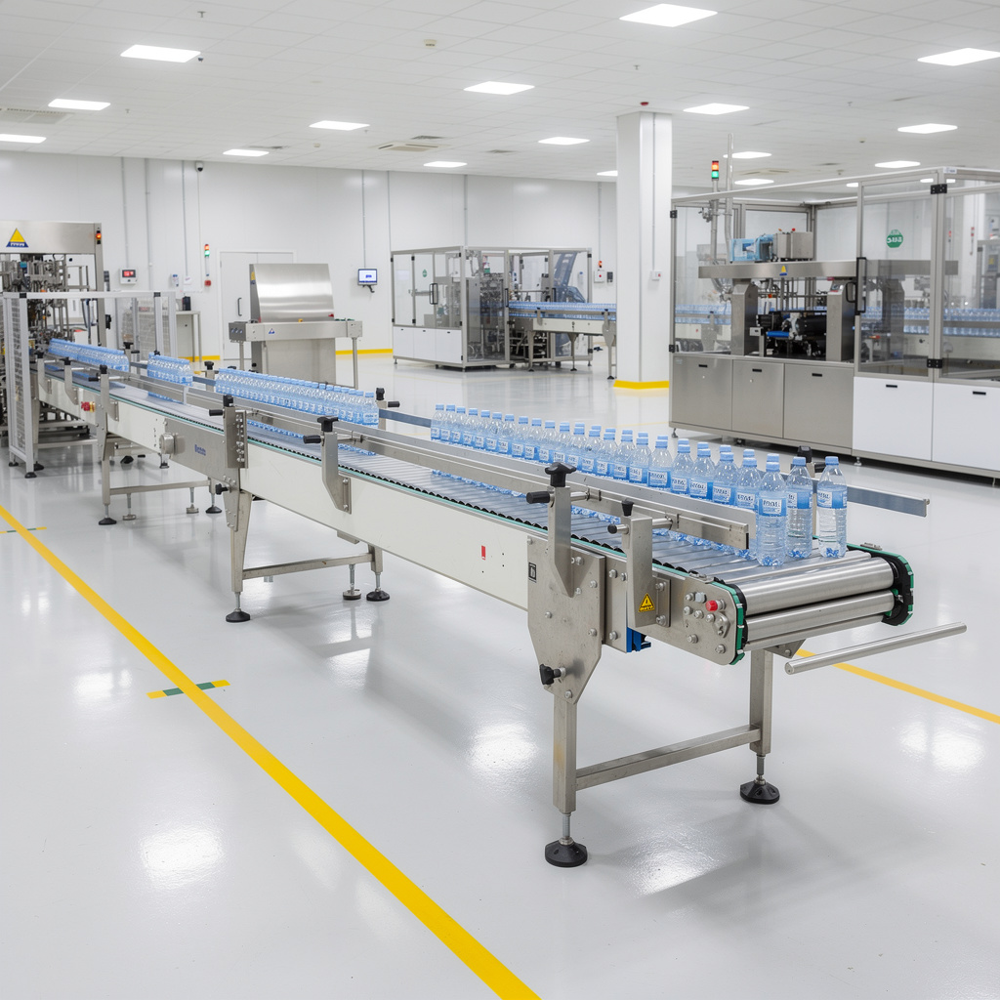
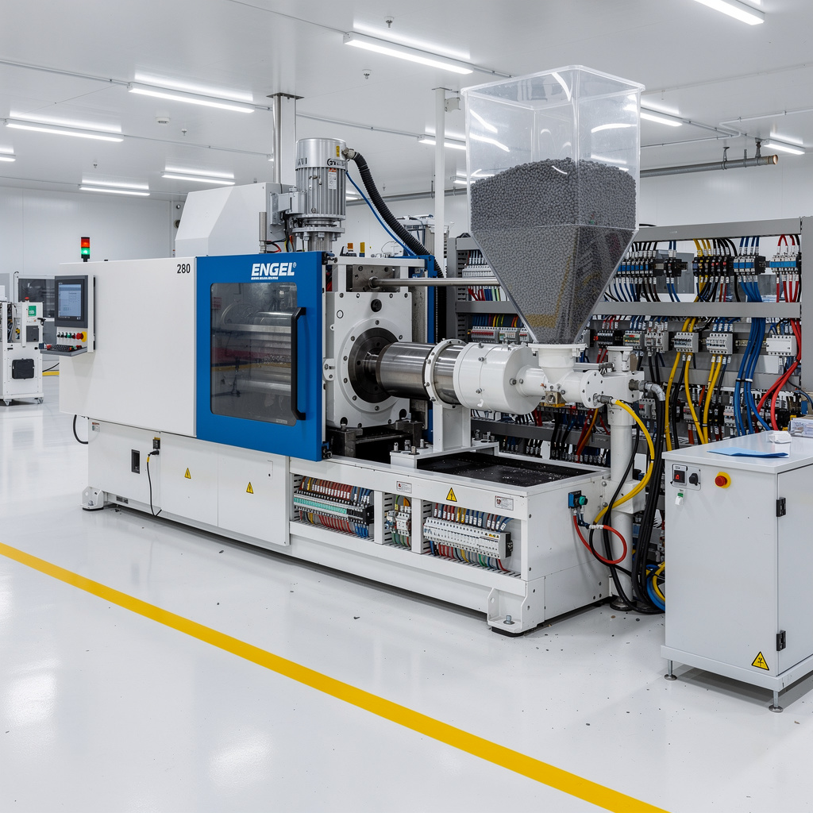
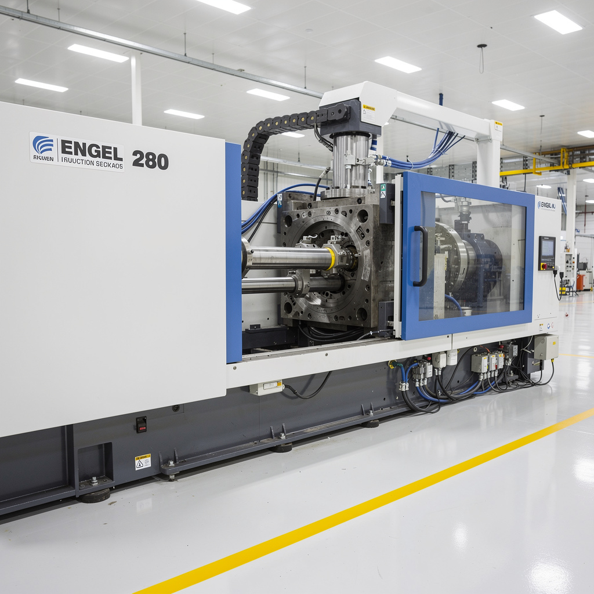
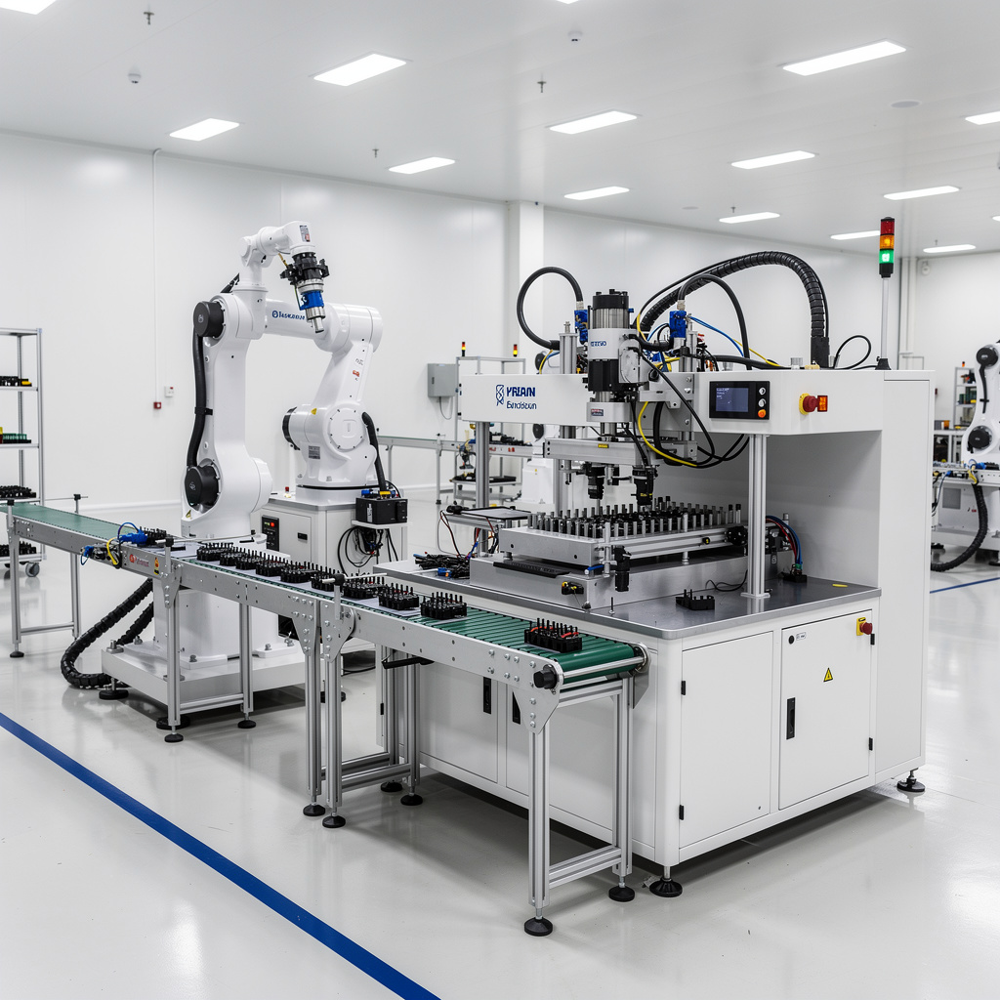

Journal des interventions

Panne récurrente encartonneuse — Ligne PET
Défaut HMI n°402 'PRODUIT_COINCÉ_ENTRÉE' toutes les 8–12 min. Accumulation de 15–18 colis rejetés/heure en sortie fardeleuse. Intervention capteur + correction programme automate Siemens S7 + recalage butée mécanique.

Mise en service presse injection + auxiliaires
Nouvelle installation. Relocalisation dans un nouveau hall. Transport, nivellement laser, raccordements électriques / hydrauliques / eau de refroidissement, sécheur granulés PA66, détecteur métal, paramétrage cycle, recette.

Débogage & optimisation programme automate
Temps de cycle 28–30 s au lieu de 16–17 s nominaux. Alarme HMI 'Timeout bras robot' 3–4 arrêts/h. Analyse TIA Portal, ajustement temporisations, parallélisation phases, ajout monitoring cycle + HMI.

Analyse cause racine — Banc de test électrique
Taux de rejet test continuité anormal : 12 % (vs 1–2 % habituel) = 240+ pièces rebutées/jour. Analyse Pareto + Ishikawa : oxydation pins, vérin vieilli, filtration hotte saturée. Remplacement + procédure préventive.

Dépannage hydraulique presse découpe / pliage
Perte brutale de pression descente rapide : 80→30 bar. Coup de bélier. Diagnostic clapet anti-retour + accumulateur + filtration. Remise en service le jour même, économie 4 h vs prévision constructeur.

Planification maintenance annuelle & pilotage GMAO
Site 142 équipements. Préventif 68 % → 94 %. Arrêts imprévus –28 %. MTBF +45 %. Classification ABC, stock pièces critiques, tableau de bord KPI, 3 projets d'amélioration interne.

Panne résolution variateur de fréquence — Convoyeur principal
Défaut variateur Siemens G120 F0001 'Overcurrent' au démarrage. Moteur 37 kW ne tourne pas. Diagnostic : roulement réducteur brûlé, graisse desséchée, 47 défauts ignorés sur 30 j. Remplacement roulement SKF 30217, regraissage, alignement laser, réglage variateur.

Panne collier chauffage — Presse injection Engel 280T
Alarme 'ZONE 2 TEMP LOW' sur écran Engel. Température chute 290→185 °C. Couple vis dépasse sécurité → arrêt. Collier céramique zone 2 circuit ouvert, câble jonction brûlé. Remplacement 600W/230V, réétalonnage PID, nettoyage bourrage PA66.

Panne capteur fermeture moule — Engel 280T
Alarme 'MOULD NOT LOCKED' sur écran Engel. Capteur inductif M12 fin de course fermeture déréglé par vibrations, air-gap 2,3 mm (nominal 1 mm). Amortisseur toggle usé. Réalignement, réglage 1,0 mm, frein fileté, remplacement amortisseur.

Panne I/O — Perte de communication esclave — Assemblage connecteurs
Alarme HMI 'Perte de communication esclave station 3'. Arrêt total machine. Câble I/O sectionné dans chemin de câble articulé → court-circuit 24 V → bobine électrovanne 12 Ω → fusion voie Q3 module ET200S. Remplacement câble PUR, bobine, module DO, récupération Profinet.

Panne S7-1200 — Batterie RTC faible + perte données recettes
CPU STOP rouge clignotant, HMI 'PLC Not Ready'. Batterie RTC CR1025 à 2,1 V (nominale 3 V). Perte données retentives DB10 recettes après coupure secteur. Programme plante sur accès DB vide. Remplacement pile, restauration recettes depuis Micro-SD.